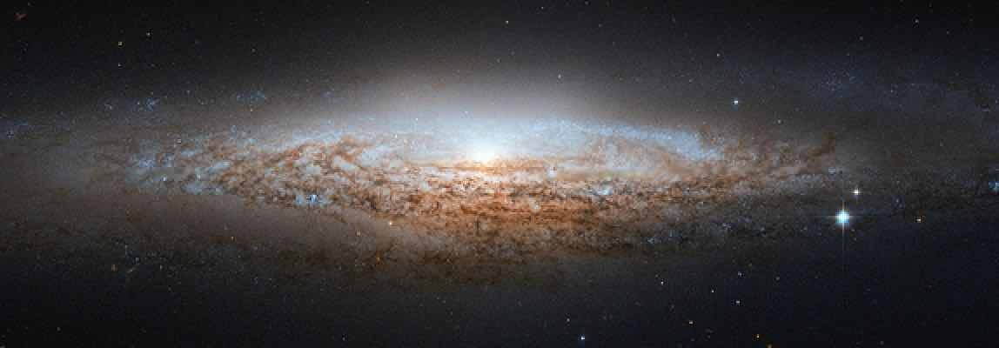
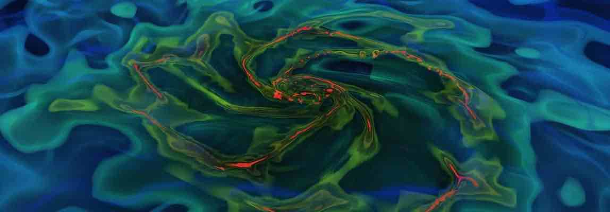

Research Highlight - AGORA Project
How do modern cosmological simulation codes fare against one another? Learn more about the AGORA High-resolution Galaxy Simulations Comparison Project I helped to launch.

Research Highlight - Galaxy Formation
How do galaxies form in computers when we include the feedback from stars and massive black holes? How do these simulations help us gain a new insight into the lives of stars, galaxies, and supermassive black holes?